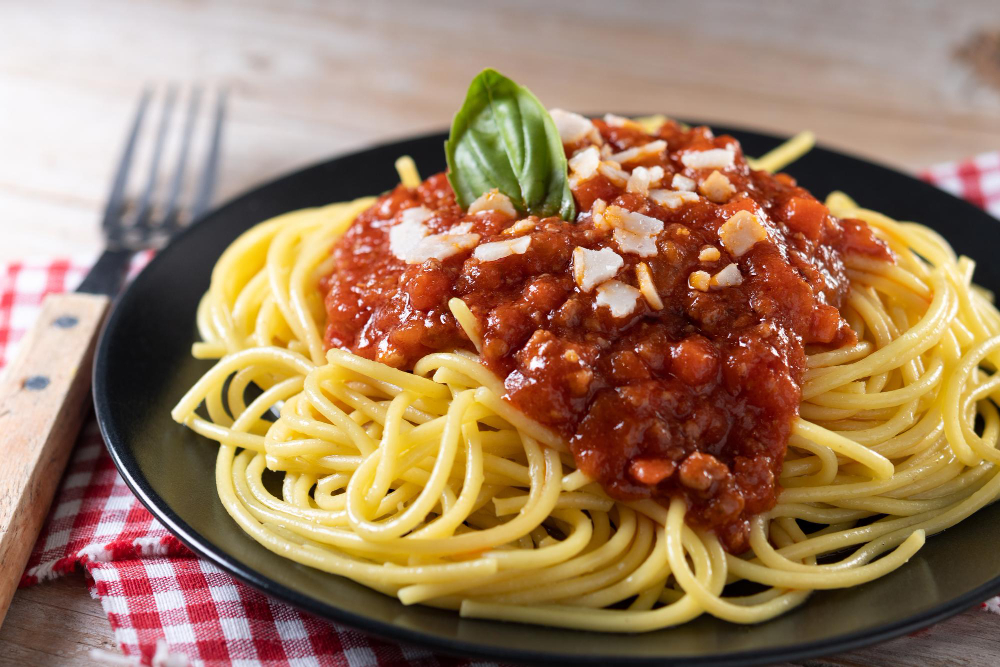

Home
Spaghetti

Original Itialian Recipe
Italian spaghetti is a long, thin, cylindrical pasta traditionally made from durum-wheat semolina. A staple of Italian cuisine, it is typically served al dente (cooked to be firm to the bite) and paired with various sauces, most famously tomato-based sauces, meat ragù, or simple preparations using olive oil and herbs.
Ingredients & Instructions
- Pasta
- Spaghetti Pasta
- Water
- Salt (for boiling)
Cooking the Pasta
- Boil Water: In a large pot, bring a generous amount of water to a rolling boil. Once boiling, add 2 teaspoons of salt. The water should be salty like the sea.
- Cook Spaghetti: Add the spaghetti to the boiling water. Follow the cooking time listed on the package, subtracting 1-2 minutes. The spaghetti should be cooked al dente (still slightly firm in the center).
- Drain and Reserve: Before draining the pasta, reserve about 1/2 cup of the starchy pasta water. Drain the spaghetti using a colander.
- Sauce
- Olive Oil (Extra Virgin)
- Garlic
- Crushed Tomatoes (Canned)
- Tomato Paste (Optional)
Main Sauce Base
- Sauté Garlic: In a large pan or pot, heat the olive oil over medium heat. Add the sliced garlic and cook for 1-2 minutes until fragrant. Do not let the garlic burn.
- Add Tomatoes: Pour in the crushed tomatoes and tomato paste (if using).
- Season: Reduce the heat to low. Add the dried oregano, dried basil, red pepper flakes (if using), salt, and pepper. Stir well.
- Simmer: Allow the sauce to simmer on low heat for 15-20 minutes. Longer simmering develops a richer tomato flavor.
- Seasoning
- Oregano (Dried)
- Basil (Dried)
- Red Pepper Flakes (Optional)
- Salt and Pepper
- Combining and Serving
- Toss in Sauce: Transfer the drained spaghetti directly to the pan containing the tomato sauce.
- Adjust Consistency: Toss to coat. If the sauce seems too thick, slowly add small amounts of the reserved pasta water until the sauce reaches a desirable consistency and clings well to the pasta.
- Serve: Serve immediately, topped with fresh chopped basil and a generous sprinkling of grated Parmesan cheese.